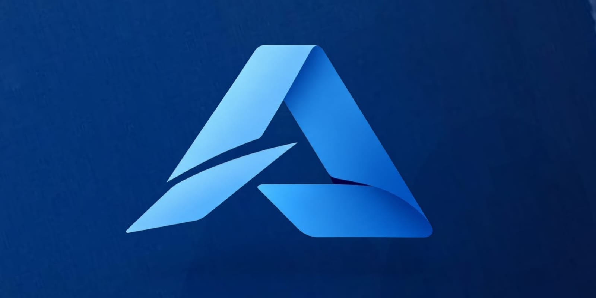

INSS · EXEMPLO
Acessar canal oficial ↗Atendimento previdenciário
Consulte informações sobre serviços previdenciários e os canais oficiais disponíveis.

adianta.PROPOSTA DE TRIAGEM DIGITAL · SERVIÇOS PÚBLICOS
A Adianta é uma triagem digital para repartições públicas: o cidadão faz o pré-atendimento online, e o servidor chega ao guichê já com a demanda organizada. Nascida de um estudo sobre logística e atendimento ao público no INSS e na Defensoria Pública.
Conheça a propostaConsulte exemplos de áreas de atendimento. A disponibilidade e a documentação devem ser confirmadas com cada instituição.
Consulte informações sobre serviços previdenciários e os canais oficiais disponíveis.
Consulte como buscar orientação jurídica gratuita e os canais oficiais da Defensoria.
Selecione a instituição e o serviço durante a solicitação de atendimento.
Solicitar atendimento ↓Cadastro demonstrativo para pessoa física. Escolha uma das modalidades e informe os dados necessários para encaminhar sua solicitação.
Diante das necessidades identificadas, apresenta-se como proposta de melhoria a criação de um site destinado à organização e ao agendamento dos atendimentos. A plataforma Adianta é uma proposta conceitual de aplicação dos princípios logísticos aos serviços públicos, com a finalidade de facilitar o acesso dos usuários às informações e aos serviços disponibilizados pelas instituições.
A ferramenta teria interface simples e acessível, permitindo que os usuários consultem os serviços oferecidos, verifiquem a documentação necessária e solicitem agendamentos. Poderia disponibilizar confirmações e lembretes, contribuindo para evitar esquecimentos, reduzir deslocamentos desnecessários e melhorar a comunicação entre as instituições e a população.
Recursos de informação e apoio administrativo, apresentados de forma simples e acessível.
Consulta aos serviços oferecidos e à documentação necessária para cada atendimento.
Solicitação de agendamentos, com confirmações e lembretes relacionados ao horário solicitado.
Apoio administrativo ao controle de horários, à organização das demandas e à distribuição dos atendimentos.
Orientações prévias para ajudar a reduzir deslocamentos motivados por falta de informação ou documentação.
No âmbito administrativo, a plataforma poderia auxiliar os profissionais no controle dos horários, na organização das demandas e na distribuição dos atendimentos entre os setores responsáveis.
A disponibilização antecipada de orientações e informações poderia reduzir a necessidade de deslocamentos presenciais apenas para esclarecimentos ou marcações de horários, permitindo que os profissionais dediquem mais atenção aos atendimentos que exigem acompanhamento específico.
Projeto acadêmico de conclusão de curso (TCC).
A proposta relaciona logística e atendimento ao público no contexto do INSS e da Defensoria Pública, aplicando princípios logísticos aos serviços públicos.
IDENTIFICAÇÃO INSTITUCIONAL
Instituição de ensino · Curso · Autor(a) · Orientador(a) · Ano
Um atendimento mais organizado começa com informação clara.
Voltar ao início ↑